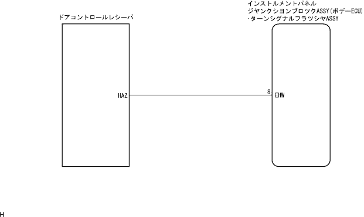

ワイヤレスドアロツクコントロールシステム アンサーバックしない(ハザード)
印刷
回路説明
トランスミツタからの信号をドアコントロールレシーバが受信し、レシーバはドアロックまたはアンロック信号をインストルメントパネルジャンクションブロックASSY(ボデーECU)へ送信すると同時に、ドアロックまたはアンロックそれぞれに応じたハザードランプ点滅信号を出力(アンサーバック)する。
□ 参 考 □
スマートドアロック付き車の場合、上記のドアコントロールレシーバはドアコントロールコンピユータウィズレシーバになります。
回路図

点検手順
手順1
ワイヤレスドアロック作動確認
トランスミツタのスイツチ操作でワイヤレスドアロックが機能することを確認する。
□ 参 考 □
ワイヤレスドアロック、アンロック作動ができればトランスミツタからのワイヤレス指示がドアコントロールレシーバに入力されていることが確認できる。
NG
ワイヤレス機能のみ作動しない回路へ
OK
手順2
ハザードランプ出力確認点検
ハザードスイッチを押したとき正常に作動するか点検する。
NG
ライティングシステムへ
OK
インストルメントパネル ジャンクションブロックASSY交換